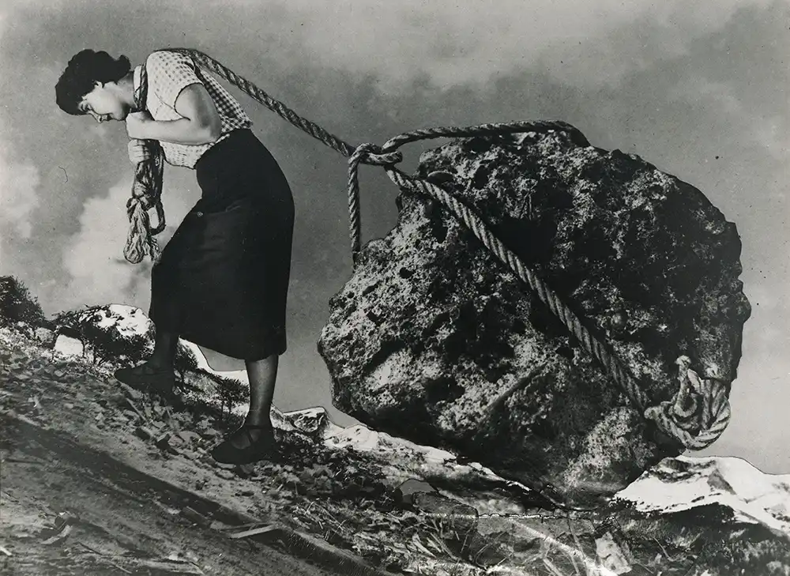

Grete Stern, fotógrafa y diseñadora germano-argentina, trabajó para la revista argentina del corazón Idilio. Realizaba fotomontajes de la interpretación de los sueños de las lectoras que hacía el director de la publicación, en los que mostraba sus problemas más habituales.
Busca tres imágenes más de su serie “Los Sueños”. ¿Qué hacen las mujeres de las imágenes?
¿Piensas que estas mujeres plantean problemas antiguos? ¿O crees que son actuales?

Grete Stern, Sueño n.º 15: Sin título, de la serie «Los Sueños», 1949
Grete Stern (1904-1999)
Nació en Alemania.
Estudió artes gráficas y fotografía, llegando a ser alumna de la Bauhaus.
La llegada del nazismo le obligó a refugiarse en Londres.
Emigró a Buenos Aires junto a su marido, el argentino Horacio Coppola.
Realizó fotomontajes revolucionarios inspirados en interpretaciones de sueños femeninos.
Realizó reportajes fotográficos sobre la población indígena argentina.